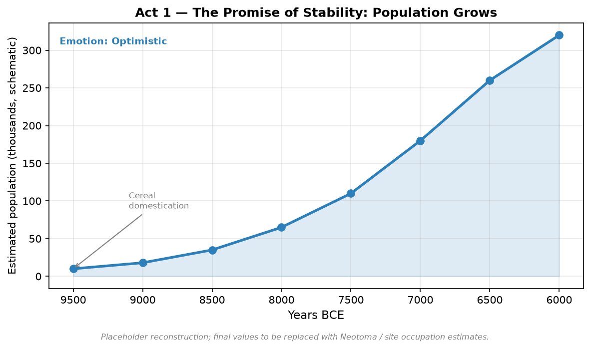
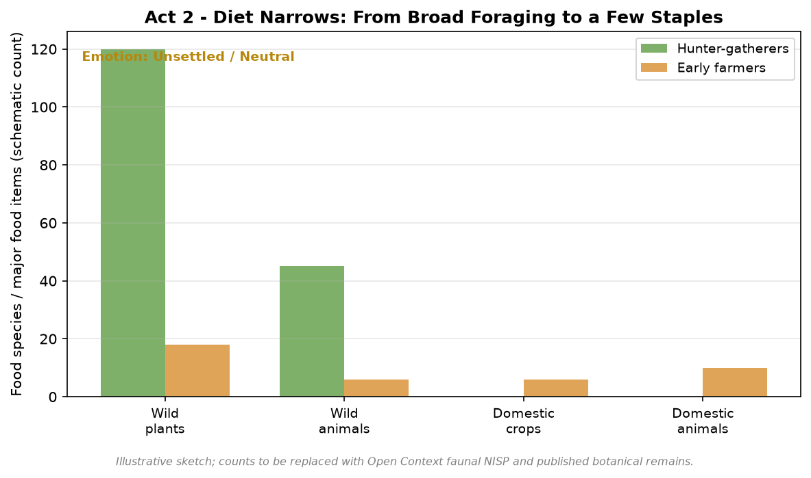
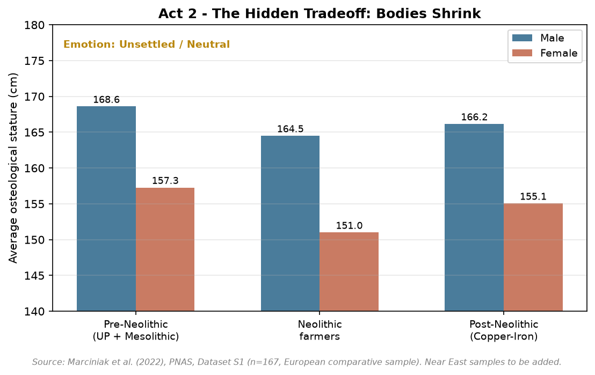
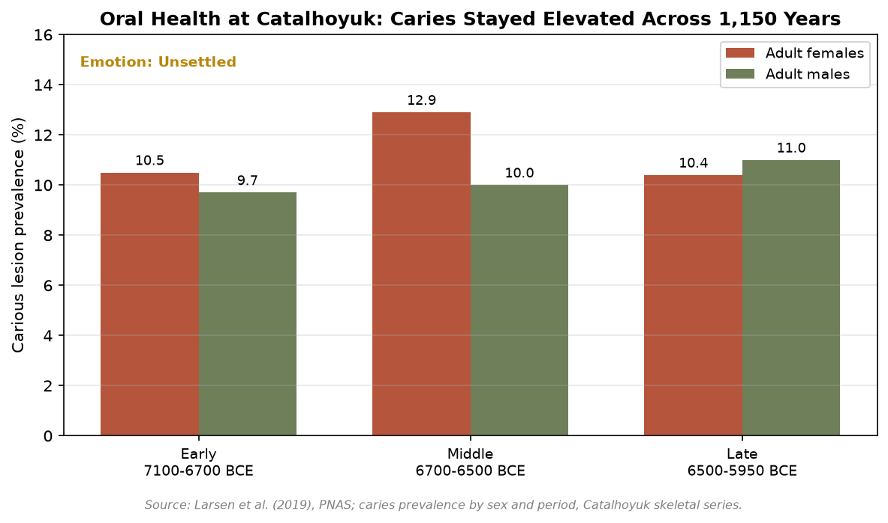
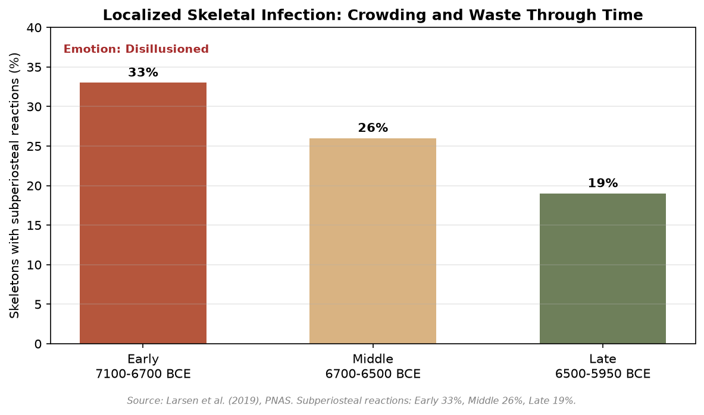
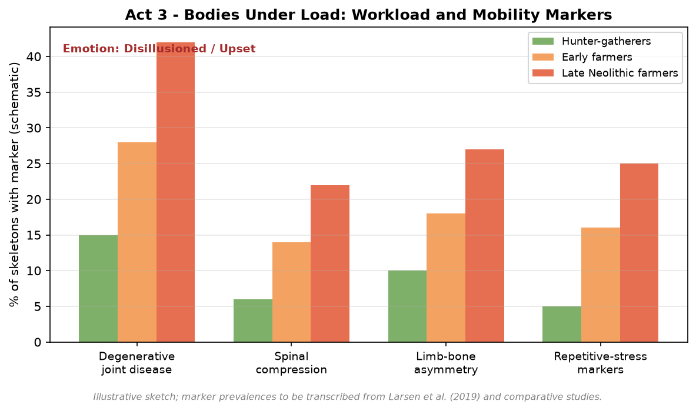
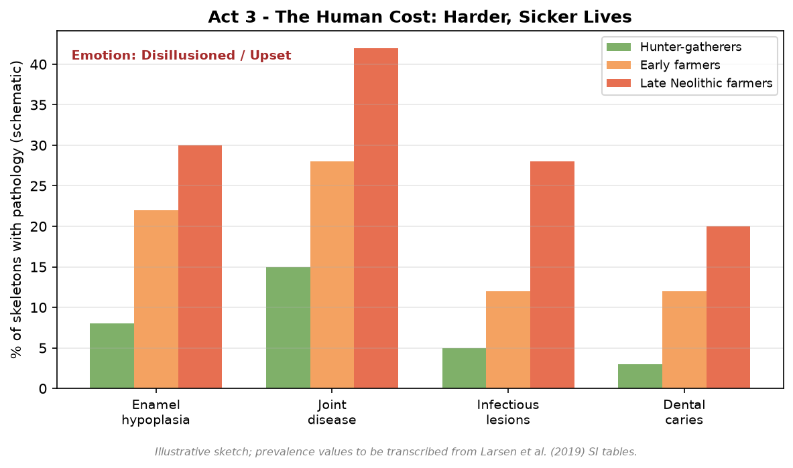
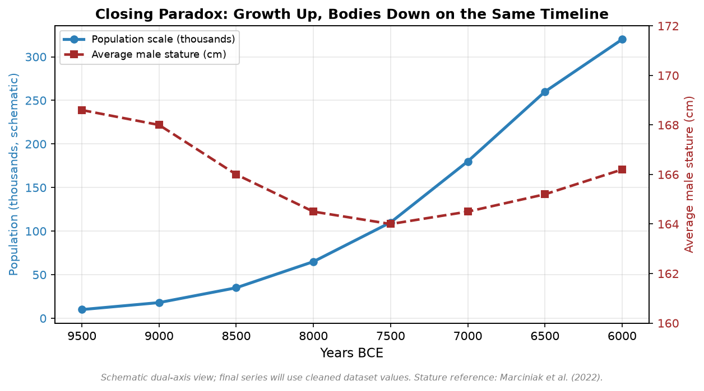

Ten thousand years ago, farming let humans settle down and grow in number. The bones of that period show what the growth cost the people living through it.
For most of human history, food was uncertain. A failed hunt or a dry season could mean hunger. In the Fertile Crescent, the domestication of grains and animals changed that: surplus could be stored, villages could be permanent, and more children survived. By every scale we usually measure, this looked like progress.

Where foragers ate dozens of wild plants and animals, early farmers relied on a small number of staples. The skeletons tell the cost: adults grew shorter, childhood stress marks were common, and teeth showed the strain of a carbohydrate-heavy diet. The community was growing — but the people in it were not thriving.



Farming was also more work. Fields and herds demanded daily, repetitive labor, and crowded settlements brought parasites and infections. The bones show worn joints, spinal strain, healed head injuries, and teeth marked by a staple-heavy diet. A larger, denser society had become harder to live inside — and the people carrying those costs are the ones the aggregate numbers leave out.



This is not an argument against agriculture. It is a question about measurement. Judged by how many people it supported, farming was a triumph. Judged by how its people's bodies held up, the picture changes. Ten thousand years later, societies still grow in ways that please aggregate numbers while individual outcomes lag. Which metrics should we trust to tell us whether life is actually getting better?
What does the headline count? Population, stored surplus, and settlement size are real achievements; they do not measure how individuals fared inside the system. Who carries the hidden cost? The people whose bones record shorter stature, worn joints, infection, and trauma rarely appear in the success metrics of the transition that shaped their lives. What would a fairer metric set look like? Any measure of progress that counts aggregate growth but omits individual outcomes tells a partial story.
